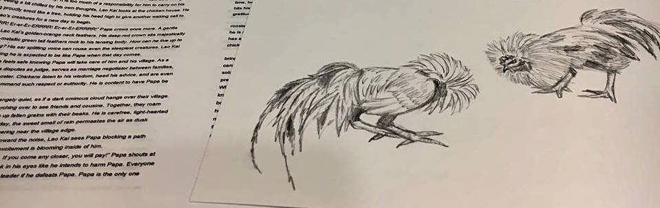
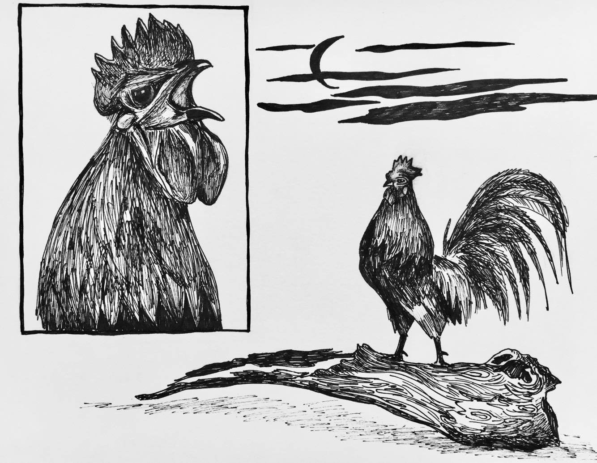
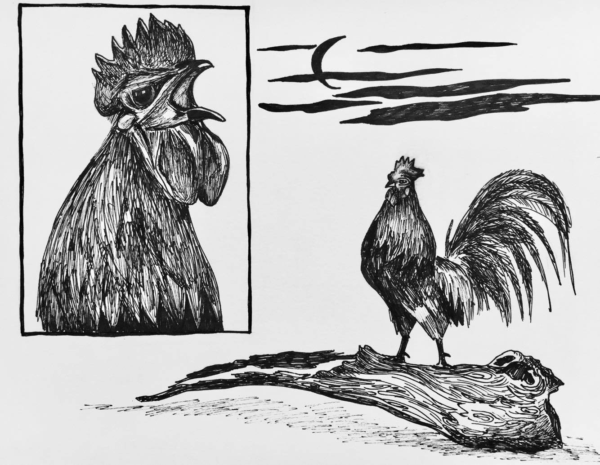

Writing
Samples of Upcoming Works: Brave Rooster

Chapter 1
“Er-er-Er-ERRRR! Er-er-Er-ERRRR! Er-er-Er-ERRRR!” The distinct crow of a powerful rooster breaks through the stillness in a village. A sliver of moon peeks through thin clouds above Lao Kai’s crown when he jumps awake from a sudden disturbance. The morning air is crisp, clean, and refreshing high in the mountains. His needle-sharp talons grasp firmly onto an old tree stump as the onset of morning approaches. Upon hearing Papa’s daily morning crows, Lao Kai feels a deep happiness and reassurance knowing the familiarity of life in his village. For a second, he sees himself like Papa as a Village Rooster, but the idea disappears quickly. It is too much of a responsibility for him to carry on his young shoulders. Feeling a bit chilled by his own thoughts, Lao Kai looks at the chicken house. He sees Papa standing proudly erect like a tree, holding his head high to give another waking call to villagers and Yer Shao’s creatures for a new day to begin.
Read moreIllustrations:
 



Poetry
Filter by:
Woman
A woman’s unruffled face
reflects on
the pond’s surface
at the Friendship Garden.
She feels braver
after taking down her curtain of insecurity,
then
adorning her skin in a comfortable robe
of self acceptance.
She breaks away
from the chains of life
where dreams are possible.
She gives herself
wings to fly
like fireflies on moon dust nights.
She speaks up
even when her voice shakes,
stands tall
before criticism.
She loves wholeheartedly,
camouflages melancholy
like a magenta raven in flight.
She rediscovers beauty,
worth,
like a long lost friend.
She bonds amicably
with those who love her,
no strings attached.
She learns compassion,
loving her inner self,
children,
nature,
imperfections.
She grows richly inside,
reclaiming a new identity.
A woman’s unruffled face
reflects on
a pond’s surface
at the Friendship Garden.
Is that my face
reflecting back?
So much lies beneath the surface.
Copyright @ Mai Chao, 2/24/2017
MO
Mo,
who is Mo?
Perhaps a brunette
or
a blond,
who loves to run.
Mo,
on the front of a white letter jacket,
fits crisp against my black ponytail.
Monogramed Mo,
track shoe wings, yellow timberwolf,
traces of another girl.
Mo,
her kind mother
gives a piece of Mo to me.
A daughter from another mother,
who wants to run like her Mo.
Running season is over,
proudly I wear Mo.
Watching frozen ice on the Mississippi
with a boy,
I see silhouettes of Mo
walking towards me.
My hand covers monogramed Mo.
Black hair girl cannot be Mo.
Feeling embarrassed for wearing Mo,
I hide behind the boy as
shadows pass by.
My shame evaporates,
slowly.
Mo and I,
two daughters loved by
a mom, teacher, believer.
The white letter jacket,
our shared casing,
one day
metamorphosizing into butterflies.
Still,
the frozen ice on
the Mississippi
stirs a deep longing of when.
When
will I be my own Mo?
Mo,
who is Mo?
Me,
who am I?
Copyright @ Mai Chao, 2/24/2017